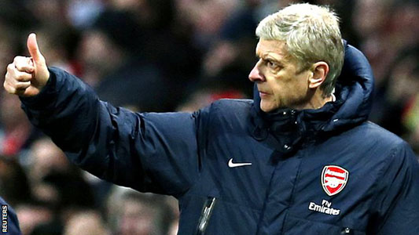

<< Back to previous page
Manager
Resume
- Date of birth: 22/10/1949
- Sex: Male
- Height: 6 ft 3 in
- Nationality: French
- The number of years in football manager: 28
- The number of clubs passed: 4
Story
Arsene Wenger was born in Strassbourg, but he lived and grown up in Duttlenheim. He knew football through his father when he was a child. However, his career in a football player was not out standing and he just was a normal player. Therefore, he gave up the football player career, instead he learned to become a coach. In 1984, he gained a manager degree and starting with Nancy - a club in Frange. Although he was talent, he could not help Nancy improve, rather than the club worse. Because of falling down of Nancy, Wenger and Nancy went to a negotiation that he quited his job in club. After the failure in Nancy, Wenger signed with another French club that is AS Monaco in 1987. In Monaco, he seem to be better with the champion league cup in 1988 and three years later, he continued to help club achieve two cups in France. In 1994, he depatured to Japan to led Nagoya after he could not help Monaco keep going. In Japan, he was so successful when Nagoya football club obtained Emporor's Cup and Japanese Super Cup. The success in Nagoya made Arsenal football club ,which is the current club, directed the eyes to him and signed with him in 1996. After two years, he helped Arsenal FC championed Premier League and created the unbeated team in Arsenal history in 2004 that the team could not be beated during the whole season. Furthermore, he is still being a coach of Arsenal FC until now and the coach has the longest time in club.
Statistic
| Team | Time | Honours |
|---|---|---|
| Nancy | from 1984 to 1987 | None |
| AS Monaco | from 1987 to 1994 | 1 Ligue 1, 1 Coupe de France |
| Nagoya | from 1994 to 1996 | 1 Emporor's Cup, 1 Japanese Super League |
| Arsenal | from 1996 to present | 3 Premier League, 6 FA cup, 6 Community Shield |